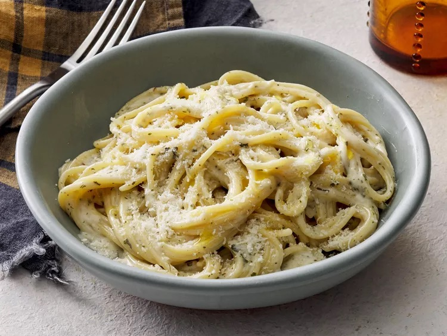

Creamy Garlic Pasta Recipe
Home

Description
As far as creamy pasta recipes, this is the best I have ever had. Add prawns and/or scallops to make an amazing seafood Alfredo.
Ingredients
These are the required ingredients.
- Olive oil
- Garlic
- Spaghetti
- Heavy cream
- Parmesan cheese
- Butter
Steps
Gather all ingredients.
- Heat olive oil in a medium pan over medium heat. Add garlic and stir until fragrant, 1 to 2 minutes. Add butter and stir constantly until melted.
- Pour in 3 cups chicken broth; add pepper and salt. Bring to a boil. Add spaghetti and cook, stirring occasionally, until tender yet firm to the bite, about 12 minutes. Add more chicken broth if pasta starts to stick to the pan.
- Add Parmesan cheese, cream, and parsley and mix until thoroughly combined. Serve immediately.